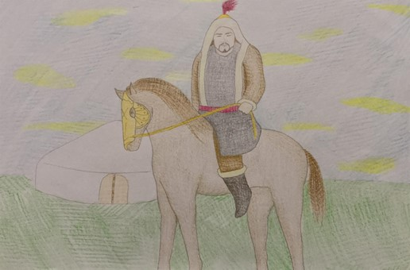

Ben Kañlı Koca oğlu Kan Turalı… Adıma bağlı anlatma Dede Korkut Kitabı’nın Dresden yazmasında yer almaktadır. Adımdan kitaptaki diğer anlatmalarda söz edilmez. Oğuz’un yüzü nikaplı dört yiğidinden biriyimdir. Alp tipinin bütün özellikleri bende vardır. Cemal ve kemal sahibiyimdir. Adıma bağlı anlatmada bütün mücadelem, Trabzon tekfurunun kızı “sarı tonlu” (sarı elbiseli) Selcen Hatun’la evlenebilmek içindir. Selcen Hatun’u alabilmek için üç vahşi hayvanla (kağan aslan, kara buğra, kara boğa) bire bir mücadele ettim ve ancak onları öldürdükten sonra evlenmek istediğim kadını alabildim. Bu tür bir evlilik, benim hikâyemi çok daha arkaik dönemlere kadar götürmektedir. Çünkü uzak geçmişte erkekler ya da kahramanlar evlenmek istedikleri kızları alabilmek için zorlu sınavlardan geçmek, rakiplerini devre dışı bırakmak zorunda idiler. Evlenmek istediğim kadın, tıpkı benim gibi, alplık özelliklerine sahip olmalıdır. Babam Kañlı Koca, bana nasıl bir kadın istediğimi sorduğunda ona şu cevabı vermiştim: “Baba ben yirümden turmadın ol turmış ola, men kara koç atuma binmedin ol binmiş ola, men kanlı kâfir iline varmadın ol varmış maña baş getürmiş ola.” Benim tasvir ettiğim bu kadın tam da Selcen Hatun idi. O, sağına soluna aynı anda iki yayla ok atabilen, attığı oku yere düşürmeyen savaşçı bir kadın idi. Lakin bu tür bir kadın arayışımdan daha sonra pişman oldum, hatta uğruna vahşi hayvanları öldürdüğüm Selcen Hatun’u öldürmek bile istedim. Neden mi? Çünkü ben Selcen Hatun’u alıp dönüş yolunda mola verdiğimizde kızını verdiğine pişman olan Trabzon tekfuru peşimize askerlerini takmıştı. Ben mola yerinde uyurken Selcen Hatun atının üstünde nöbet tutmuş ve gelenleri benden önce görmüş. Bense derin bir uykuya dalmıştım. Selcen Hatun’un uyandırmasıyla gelenleri karşıladık. Selcen Hatun, düşmanın kaçtığını düşünüp mola yerine geri dönmüş. Bakmış ki ben ortalıkta yokum. Kâfirler beni bir yerde sıkıştırmış idi. Tam o sırada yetişen Selcen Hatun beni kurtardı. Ben, göz kapağımdan yaralandığım için kâfirleri kovalayan kişinin Selcen Hatun olduğunu sonradan anladım. Bir kadın tarafından kurtarılmak zoruma gitti, Selcen Hatun’un olan bitenleri Oğuz ülkesinde anlatabileceğinden, bundan dolayı da mahcup olabileceğimden çekindim. Selcen Hatun’u öldürmek istedim. Selcen Hatun beni yatıştırmaya çalıştı fakat ben sakinleşmedim. Bunun üzerine birbirimize ok atarak mücadele etmeye kalkıştık. Selcen Hatun’un attığı temrensiz ok kafamdaki bütün bitleri ayağımın dibine indirdi. Bunun üzerine koşturup kendisine sarıldım ve kendisini sınamak istediğimi, öldürmeyi hiç ama hiç düşünmediğimi söyleyerek durumu düzelttim. Sorunu çözdükten sonra atlarımıza binip Oğuz ülkesine geldik.
